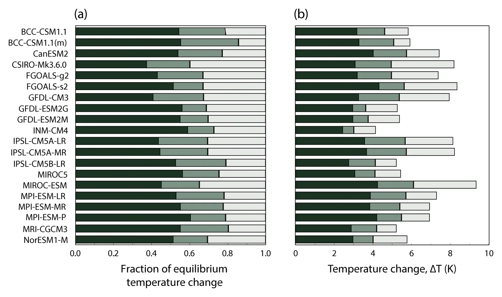

Projections of the pace of warming following an abrupt increase in atmospheric carbon dioxide concentration
Key finding. Curve fits to the CMIP5 abrupt-CO2 simulations realize approximately half of equilibrium warming — range 38% to 61% — within the first decade after a CO2 concentration increase, but approximately one quarter — range 14% to 40% — arrives more than a century later; following an instantaneous quadrupling of CO2, four of the 20 fitted model results reach 4 degrees Celsius of warming within the first decade while three require more than a century.

What question did this research address?
Climate models are usually compared on how much they warm, not on how fast. Yet for risk assessment the schedule matters: warming that arrives within a decade and warming that arrives after a century are different problems.
This paper asked how the CMIP5 models distribute warming over time after an abrupt CO2 change, and whether that response can be captured by simple mathematical models useful for other calculations.
What did we find?
The analysis uses the CMIP5 step-function CO2 simulations plus a control run to estimate adjusted radiative forcing, the climate feedback parameter, and effective thermal inertia for each model, and shows these suffice to predict the response to time-varying CO2.
Several functional forms are tested — single-exponential, multiple-exponential, and a one-dimensional ocean-diffusion model. All except the single-exponential can fit most CMIP5 results well, for both step-change and continuous pathways.
Choosing among them is not settled by fit quality. It depends on how many free parameters the application can constrain and on what underlying mechanism the user wants the model to embody.
The fast fraction is large: 38% to 61% of eventual warming appears within ten years. The slow tail is also large: 14% to 40% takes more than a century.
The spread across models is the finding with the sharpest edge. Under instantaneous quadrupling, four of 20 fits pass 4 degrees Celsius within a decade and three take more than a century — an order-of-magnitude disagreement about timing.
That spread motivates the paper's closing recommendation: reduce uncertainty in the temporal response of climate models, and account for it when assessing climate risk.
Why does it matter?
Uncertainty in climate sensitivity is discussed constantly; uncertainty in how quickly that sensitivity is realized much less so. This paper shows the second is comparably large and matters more for anything time-bound, like adaptation planning or emissions timing.
The simple fitted models are practical output. They let integrated assessment models and policy analyses reproduce CMIP5 temperature trajectories without running a general circulation model.
A large fast fraction and a long slow tail together mean that most of the warming from an emission is felt by the people who caused it, while a substantial remainder is left to people a century away.
Citation, data, and code
Ken Caldeira and Nathan P. Myhrvold (2013). Projections of the pace of warming following an abrupt increase in atmospheric carbon dioxide concentration. Environmental Research Letters 8, 034039.
Related
- How long does a carbon dioxide emission go on warming the planet?
- Climate sensitivity uncertainty and the need for energy without CO2 emission (Caldeira et al., 2003)
- Rate of global warming projected to decline under current policy (Duan and Caldeira, 2024)
- Fast and slow climate responses to CO2 and solar forcing — a linear multivariate regression model characterizing transient climate change (Cao et al., 2015)
- Stabilizing climate requires near-zero emissions (Matthews and Caldeira, 2008)